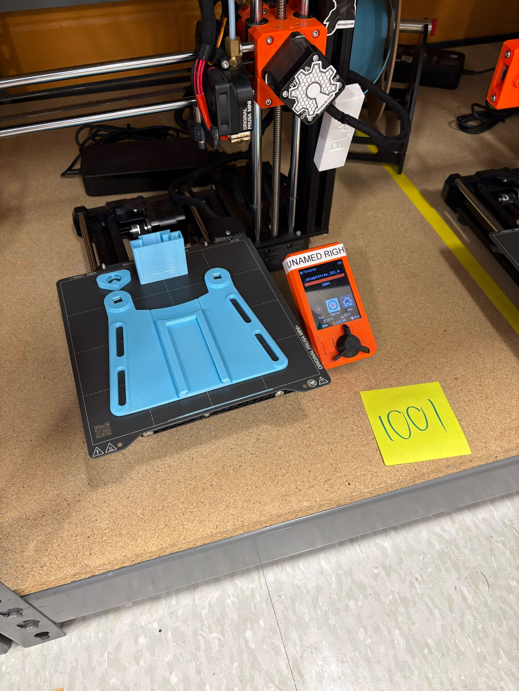
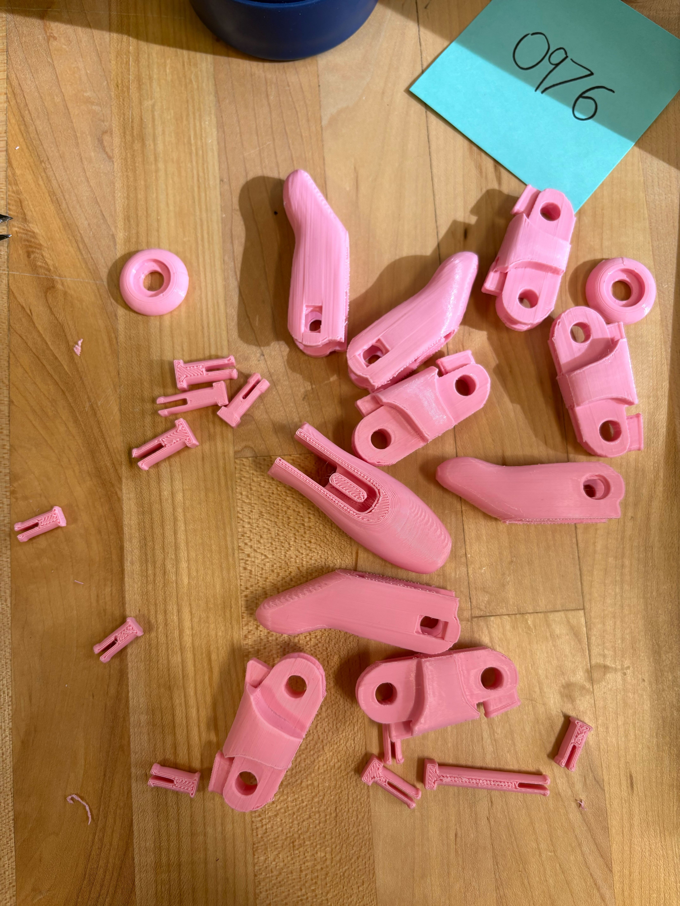
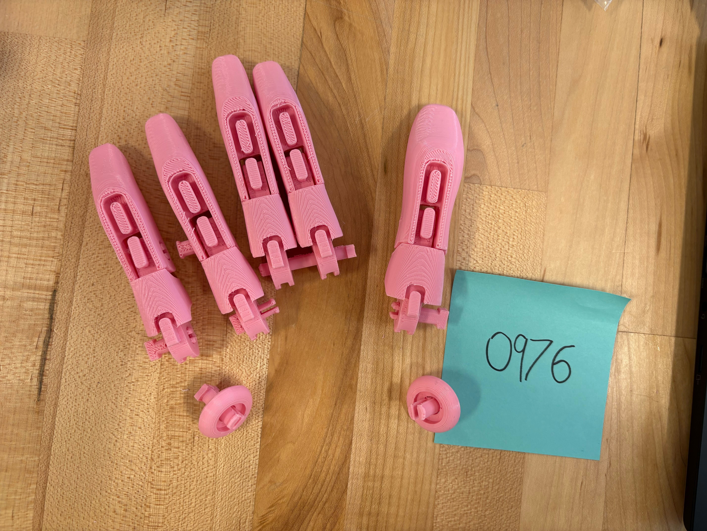
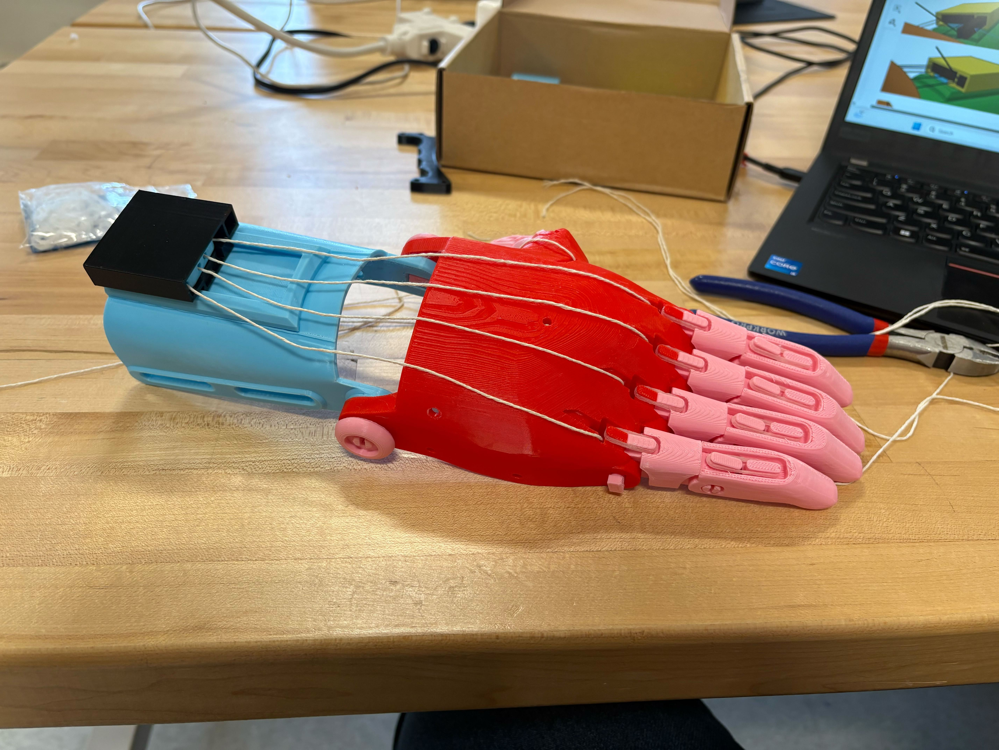
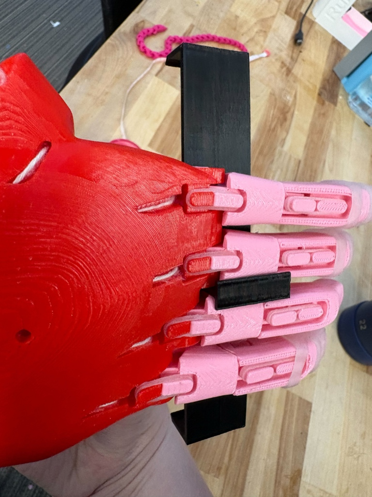
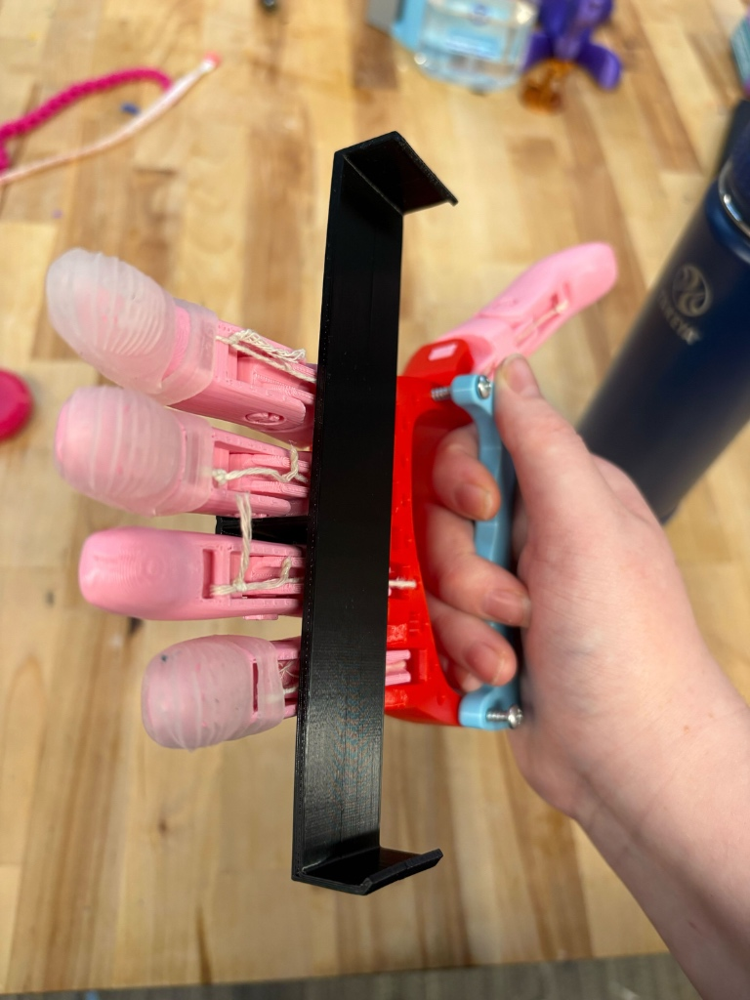

1. The Open-Source Ecosystem
Before fabricating the prosthesis, I explored the open-source assistive technology ecosystem, including the e-NABLE Hub, the NIH 3D Print Exchange, and Makers Making Change.
Initially, navigating these platforms felt a bit confusing—which is normal for me when entering a dense, new website repository. However, after spending some time clicking around and exploring the directory structures, I found it relatively simple to navigate and locate the specific files I needed. During this exploration, I noticed the wide variety of devices available across the platforms, including several different iterative versions of the Phoenix Hand.
If I were to build my own assistive technology repository from scratch, I honestly wouldn't change the foundational structure much, as the current categorization works well. However, one specific improvement I would implement is adding visual thumbnails to the directory lists. Allowing users to see pictures of the devices before clicking on them would vastly improve the browsing experience.
Documentation Evaluation
- Findability: It takes a moment to acclimate to the site hierarchy, but files are logically grouped. Adding image previews to the main search results would make finding specific models much faster.
- Completeness: The provided STLs and assembly materials are comprehensive, ensuring all printed parts and non-printed hardware are accounted for.
- Clarity: The baseline instructions are relatively straightforward, though a complete beginner might need to re-read certain mechanical routing steps multiple times.
- Visual Documentation: While individual manuals use photos, the broader repository navigation lacks upfront visual previews. Step-by-step photos during assembly are heavily relied upon but sometimes lack specific close-up annotations.
- Troubleshooting: The documentation could be improved by highlighting "common pitfalls" directly within the main assembly steps rather than at the end.
- Accessibility: The platforms rely heavily on English text and specific hardware assumptions. Expanding multi-language support and ensuring high-contrast, screen-reader-friendly PDFs would make the ecosystem much more inclusive.
2. Fabrication & Assembly
We utilized Prusa Mini+ printers to fabricate the e-NABLE Phoenix Hand V2 parts in PLA. To fit our sizing requirements, the entire model was scaled up to 150%. Because of the size increase, the print jobs had to be carefully divided across multiple machines over several days.
PrusaSlicer Settings:
- Material: PLA
- Layer Height: 0.10mm (Chosen over the standard 0.20mm structural profile to yield a much smoother cosmetic surface finish).
- Infill: 15%
- Supports: The majority of the parts did not require additional generated supports, relying purely on the model's built-in optimized geometry.
- Ironing: Enabled for all top surfaces to further enhance the aesthetic smoothness of the outer shells.




Functional Analysis
The Phoenix Hand V2 relies on a wrist-driven mechanism. When the user flexes their wrist downward, the tensioning cables (the white strings routed from the tensioner box down to the fingertips) are pulled taut. Because these strings are routed over the joints, this tension forces the fingers to curl inward simultaneously, creating a grasping motion.
- Grip Actuation: The grip is strictly binary—all fingers close together to form a fist. There is no individual finger articulation.
- Reset Mechanism: When the wrist returns to a neutral position, the cable tension is released. Elastic cords routed through the back of the fingers snap the hand back to an open position.
- Limitations: The overall grip strength is directly proportional to the user's wrist strength. Additionally, the smooth, hard PLA surface has a low coefficient of friction, meaning smooth objects can easily slip unless the hand is modified with grip tape or a task-specific attachment (addressed in Part 4).
3. Documentation Redesign & Usability Testing
During our build, we found that the physical assembly of the fingers, snap-pins, and gauntlet was relatively straightforward. However, the documentation completely fell apart during the stringing and tensioning phase.
The official PDF and video tutorials were highly confusing regarding the tensioner block—specifically how to correctly interface the thumb tip pin, the thumb tensioner pin, the whippletree, and the gripper box. The routing paths were poorly visualized, making it nearly impossible to replicate the intended mechanical tensioning using the rear screws. To solve this, I developed a simplified, alternative assembly method.
Materials & Tools Needed:
- Whippletree, Gripper Box, & Swivel Pin STLs
- 5x Tensioning Lines (Non-stretching cord)
- Cyanoacrylate (Superglue)
- Scissors or Other Cutting Tools
Alternative Assembly Steps:
- Route the Fingers: Feed the four main finger tension lines through the standard outer holes on the whippletree.
- Route the Thumb: Feed the fifth string (the thumb line) directly through the main, large central hole of the whippletree and tie a secure knot to hold it in place.
- Insert the Swivel Pin: Slide the 3D-printed swivel pin through that same main central hole of the whippletree so everything is neatly consolidated.
- Set Tension & Glue: Pull all strings to the correct tension (so the hand is fully open when the wrist is bent back). Place the assembled whippletree and swivel pin into the gripper box. Apply superglue specifically between the swivel pin and the inside of the gripper box (blowing on the glue helps it set faster).
- Trim: Once the glue fully cures, the tension is permanently locked in. Snip the excess string. You no longer need the complex rear tensioner screws.
Peer Usability Test Reflection
To validate this alternative assembly method, we conducted a peer usability test by sharing our technique with another group that was stuck on the exact same tensioning steps. Their feedback was overwhelmingly positive: "The stringing method was extremely helpful. I had been repeatedly watching the YouTube hand assembly video and reviewing the manual, but neither was effective. This method made the process much more efficient and faster than using a screwdriver, and it worked very well." This test confirmed that sometimes a well-documented, simplified "hack" can be much more accessible and practical than the official, hardware-intensive instructions.
4. Task-Specific Modification: Smartphone Mount
To extend the functionality of the right-handed Phoenix Hand, I designed a custom modification targeting a highly relevant daily task: holding a smartphone. The goal was to securely mount the phone to the prosthesis, freeing up the user's fully intact left hand to type, swipe, and effortlessly interact with the touch screen.
Functional Requirements & Mechanics
The design required a non-permanent, lightweight attachment mechanism that could support the dimensions of a standard smartphone without permanently altering the hand or obstructing its tension lines. I designed a custom bracket that snaps directly onto the bottom knuckles of the ring and middle fingers. By utilizing a friction/snap-fit tolerance, the user can easily clip the mount on when viewing their phone, and quickly remove it when standard gripping functionality is needed.
Systematic Inventive Thinking (SIT)
This design utilizes the Task Unification SIT pattern. In traditional use, a person might need a separate pop-socket, a desk stand, or their other hand to stabilize their device. By applying Task Unification, we assigned the new task of "phone stabilization" directly to the existing structural knuckles of the prosthesis. The prosthetic hand itself seamlessly takes on the job of the accessory.


5. Reflection & Community Contribution
Ethical Reflection
Globally, there are roughly 1.6 billion people living with disabilities. While open-source projects like the e-NABLE Phoenix Hand offer incredible, low-cost alternatives to this population, it is vital to apply the Microsoft Inclusive Design Toolkit principle of Recognizing Exclusion. The harsh reality of open-source hardware is that it inherently excludes individuals who lack access to 3D printers, internet connectivity, or the technical literacy required to slice and assemble the files.
While non-profits and volunteer networks step in to manufacture and distribute these devices locally, relying on a volunteer-driven model presents a significant "awareness gap." The people who are most in need of these free devices are often the least likely to know these programs exist. Furthermore, while the Phoenix Hand beautifully illustrates the principle of Solve for One, Extend to Many—providing a basic, modifiable grasping function that can be adapted globally—it cannot completely replace a customized, highly durable medical-grade prosthesis. Open-source AT is a powerful stepping stone, but it has functional limits and systemic distribution challenges.
Community Contribution (Stewardship)
To give back to the open-source community, I have provided a "Lessons Learned" resource directly on this page for future makers. Rather than hiding this information in a separate PDF, my contribution integrates my 150% scale print settings (see Part 2) and documents a major failure mode encountered during the build: the confusing rear-screw tensioning block on the official V2 hand.
Lessons Learned: The Swivel Pin Hack
The official documentation for the tensioner block often leads to slipping strings and frustration. Our fix entirely bypasses the rear screws. By routing the thumb string through the main whippletree hole, inserting the swivel pin through that same hole, and supergluing the swivel pin directly to the inside of the gripper box, you create a permanent, robust tension anchor.
Please reference the "Alternative Assembly Steps" in Part 3 of this page for the full, step-by-step instructions on applying this fix to your own e-NABLE build.
Bridge to the Capstone
From what I have learned working on this project, I realized that I take my own physical abilities for granted in almost everything I do. One area where this became highly apparent is gaming—a medium that requires incredibly complex manual dexterity and button combinations from both hands. I did some digging and found that there is a large community of gamers who have hand or limb impairments that prevent them from playing the way able-bodied players do. This realization has inspired me to pursue a specific design challenge for my upcoming team capstone project: designing assistive gaming technology or adapted controllers to help bridge this accessibility gap.